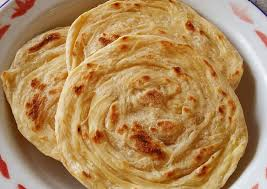

Praktikum2
Resep Kue Maryam"

Bahan-Bahan :
- 250 gr tepung terigu
- 1 butir telur
- 3 sdm margarin, lelehkan
- 100 ml air hangat
- 2 sdm susu bubuk (optional)
- 1/2 sdt garam
- margarin leleh untuk olesan
- minyak untuk merendam
Langkah-langkah
Campur semua bahan roti menjadi satu
 Uleni sampai kalis(aku pake tangan) jangan taut jika adonan lengket ya, lumuri tangan sesekali dengan tepung
(api jangan menambahkan tepung)uleni terus sampai adonan kalis.
Uleni sampai kalis(aku pake tangan) jangan taut jika adonan lengket ya, lumuri tangan sesekali dengan tepung
(api jangan menambahkan tepung)uleni terus sampai adonan kalis.
 Kalisnya adonan canai tidak sekalis adonan roti ya, kira2 seperti ini sudah cukup
Kalisnya adonan canai tidak sekalis adonan roti ya, kira2 seperti ini sudah cukup